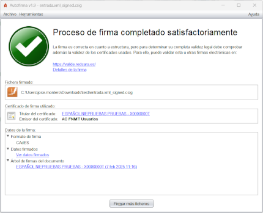
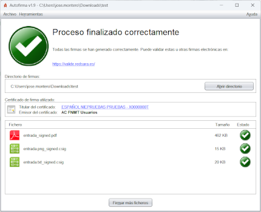
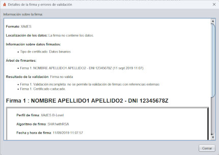

Tras finalizar una operación de firma, se muestra una pantalla con información sobre el resultado de la operación.
 
Si se desea obtener más información acerca de la firma, se puede pulsar en el enlace Detalles de la firma y se mostrará un diálogo con información acerca de la misma:

Esta pantalla se divide en tres secciones:
Información sobre el fichero firmado o el directorio de salida
Se muestra la ruta completa del fichero firmado (puede copiar esta ruta pulsando sobre ella con el botón
derecho del ratón) o la del directorio de salida. Si se realizó la firma PAdES de un documento PDF,
se mostrará un botón para abrir el documento firmado con la aplicación predeterminada en el
sistema.
Información sobre el certificado utilizado para realizar las firmas
Es posible ver el certificado (mediante la aplicación predeterminada del sistema operativo) pulsando en los
hiperenlaces.
Información detallada sobre la firma o conjunto de firmas realizas
En el caso de firmar un documento, se muestran al menos los siguientes puntos mediante una estructura de árbol:
Para desplazarse entre los elementos del árbol se pueden usar los cursores del teclado.
En caso de haber firmado múltiples ficheros, se mostrará un listado con los ficheros generados, su tamaño y resultado. En el caso de las firmas que no se hayan podido generar, se mostrará la ruta del fichero de entrada. Puede hacer doble clic sobre una de las firmas del listado para acceder a su información detallada.